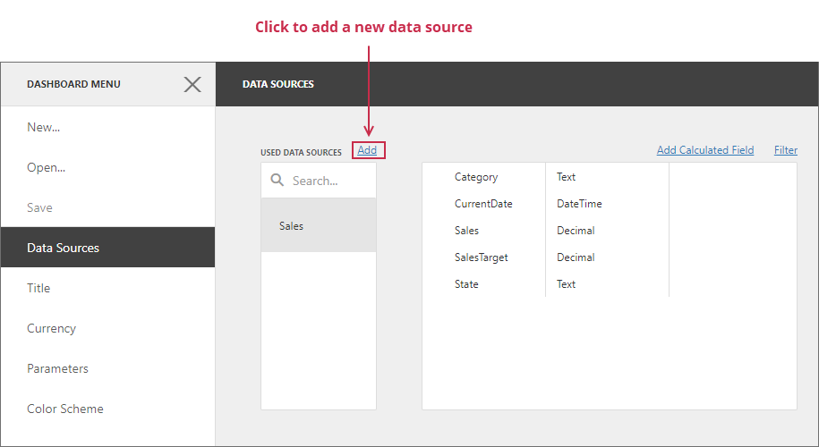

Dashboard Data Source Wizard
The Dashboard Data Source Wizard allows you to configure a data source, retrieve its data, and add the created data source to a dashboard.
To invoke this wizard, open to the Data Sources page in the dashboard menu and click Add:

In the invoked window, click Create data source:

On the start page, select the data source type:

You can create a new data source based on a database, JSON data, an OLAP cube, or create a federated data source. Click Next to proceed to the next wizard page depending on the selected data source type:
-
Obtains data from all major data providers (for example, Microsoft SQL Server, XML data, Microsoft Access, and Oracle).
-
Connects to JSON-formatted data.
-
Connects to OLAP cubes.
-
Creates a federated data source from the existing data sources.